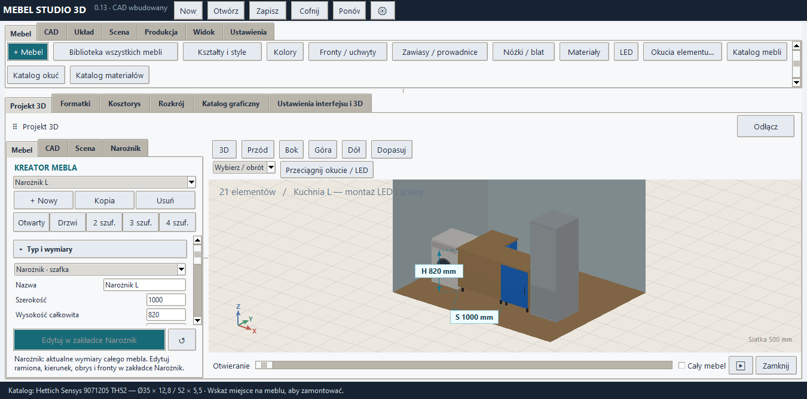
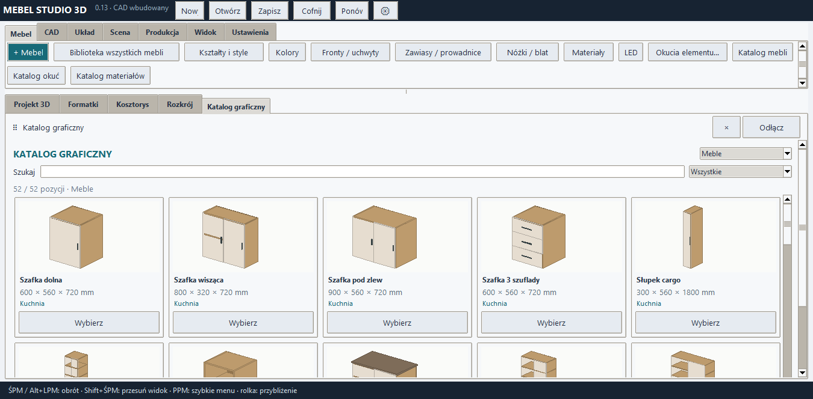

MebelStudio3D 0.14
Pełny kreator i natywny silnik C++
Dotychczasowy interfejs, szkic, CAD, biblioteki, wyposażenie, rozkrój oraz eksporty działają w jednej aplikacji z natywnym widokiem C++. Logika CAD i interfejs pozostają w osadzonym środowisku Python/Tk. Wszystkie funkcje nie zostały jeszcze przepisane do C++.
W Ustawienia → Okno, skala, panele i silnik 3D wybierz Automatyczny dobór, DirectX 11, DirectX 12, Vulkan, OpenGL lub CPU. Automatyczny dobór uruchamia silnik C++, a gdy jest niedostępny, przechodzi do OpenGL lub CPU. OpenGL zachowuje dotychczasową wysoką jakość. Jakość i silnik nie zmieniają danych produkcyjnych mebla.
Ustawienie silnika obejmuje główny projekt, dodatkowe wizualizacje i podgląd szkicu. Zachowane są kamery dokumentów, wymiary, rozstrzelenie, X-ray, oznaczenia otworów, uchwyty rozciągania i montaż okuć na powierzchniach. Nieudane przełączenie zachowuje działający widok oraz zapisuje informację w logach.
Rozpakuj cały ZIP do osobnego folderu. Uruchom MebelStudio3D.exe i zachowaj dołączone foldery. Wersja 0.13 pozostaje osobno. Nie potrzeba pip, oddzielnej instalacji Pythona ani CAD.
Szczegółowa instrukcja 0.14
Przykład sceny · Przykład dokumentacji do druku
MEBEL STUDIO 3D 0.14 — Windows, CAD wbudowany
1. Rozpakuj CAŁY ZIP do nowego folderu. Uruchom MebelStudio3D.exe.
Plik EXE oraz foldery app, _internal i runtime pozostaw razem.
Nie trzeba instalować Pythona, pip ani osobnego CAD.
Wersja 0.13 i jej paczka pozostają osobno. Starsze projekty .mebel otworzysz
z menu Plik > Otwórz. Przykład: DEMO_SCENA_0_12.mebel lub PRZYKLADY.
2. Górny pasek jest podzielony na Mebel, CAD, Układ, Scena, Produkcja, Widok
i Ustawienia. Panel po lewej zawiera Mebel, CAD, Scena i Narożnik.
Przy wąskim panelu jego zakładki przechodzą w rozwijaną listę.
Przeciągnij separator obok panelu bocznego albo pod górną wstążką.
3. Ustawienia > Interfejs i jakość 3D: automatyczny rozmiar do monitora,
własny rozmiar okna, presety, skala 75–200%, szerokość panelu i wysokość
wstążki. Można ukryć panel boczny, wstążkę lub paski skrótów nad 3D.
Przycisk ustawień jest również w nagłówku, gdy wstążka jest ukryta.
Ustawienia zapisują się na tym komputerze, poza plikiem projektu.
Rozmiar okna programu nie zmienia rozdzielczości Windows.
4. Silnik 3D wybierzesz w tych samych ustawieniach: Automatyczny, DirectX 11,
DirectX 12, Vulkan, OpenGL lub CPU. Automatyczny dobór próbuje silnika C++,
następnie OpenGL i CPU. Dostępność API zależy od karty oraz sterownika.
Jakość: Szybki podgląd, Zrównoważona albo Wysoka.
Podczas obracania rysowany jest lżejszy podgląd; po puszczeniu myszy
wraca dokładny widok. Jakość nie zmienia danych produkcyjnych ani CNC.
OpenGL zachowuje tryb wysokiej jakości i jego efekty oświetlenia.
Silnik natywny ma własny wygląd materiałów i emisję LED; nie odtwarza
wszystkich efektów oświetlenia wysokiej jakości OpenGL.
5. Mebel > Katalog mebli / Katalog okuć / Katalog materiałów.
Scena > Katalog AGD. W katalogu wybierz kategorię: meble, nogi, zawiasy,
prowadnice, uchwyty i otwieranie, LED, wyposażenie albo materiały.
Karty zawierają miniaturę i wymiary; wyszukiwanie działa także po marce.
Okucie wybiera narzędzie montażu i wraca do 3D. Kliknij powierzchnię celu.
Nogi zmieniają komplet nóg zaznaczonego mebla, zachowując korpus.
Materiał w katalogu dotyczy zaznaczonej części. Ctrl+Z cofa zmianę.
Źródło producenta jest dostępne dla pozycji z zapisanym oficjalnym linkiem.
6. Widok > X-ray: zakres Cały zestaw, Wybrany mebel, Wybrany element lub Fronty.
X-ray obejmuje teraz także boki, dna, wieńce i pozostałe części.
Widok > Otwory montażowe: Także zasłonięte albo Widoczne powierzchnie.
Różowe znaczniki z białą obwódką oznaczają widoczne otwory; żółte
przerywane pokazują zasłonięte. Najedź na otwór: dolny pasek podaje jego
rzeczywistą średnicę, głębokość, powierzchnię i przeznaczenie.
Rozmiar znacznika nie zmienia średnicy wiercenia.
7. Obsługa 3D: Wybierz / obrót, Przesuwaj, Rozciągaj mebel, Rozciągaj część,
Kanty. ŚPM lub Alt+LPM obraca kamerę w każdym trybie, Shift+ŚPM przesuwa,
rolka przybliża. PPM daje szybkie menu zaznaczonego mebla. F dopasowuje.
AGD przesuwasz narzędziem Przesuwaj; Shift przesuwa w pionie.
Magnes dopasowuje krawędzie mebli. Obrót mebla: panel Układ lub szybkie menu.
8. Okucia / LED: przeciągnij kafelek na mebel albo wybierz kafelek i kliknij cel.
Zawiasy wybierają drzwi, prowadnice front zarządzanej szuflady. LED dopasowuje
długość do powierzchni, także boku, dna i blatu. Dostępne są margines,
szerokość, kierunek U/V, własna długość i opcjonalny rowek w płycie.
Przed montażem zamknij mechanizmy i wyłącz rozstrzelenie; Esc anuluje.
9. Narożnik: L, ścięty, zaokrąglony, lewy/prawy, wymiary obu ramion,
fronty, półki, nogi i materiały. Wspólny blat w Układ usuwa indywidualne
blaty kreatora i daje listwy wzmacniające pod jeden długi blat.
Szkic CAD, rozciąganie, kanty i obróbki są nadal dostępne.
10. Scena: jasność, podłoga, ściany, sufit i ich kolory, LED i lampy osobno.
Dopasuj w 3D obejmuje meble i wyposażenie. Pokaż całe pomieszczenie
obejmuje również ściany. Przy obracaniu można odsłaniać ściany od kamery.
Scena / Produkcja > Logi otwiera zamykaną zakładkę diagnostyczną.
11. Widok > Wymiary: wybrany mebel, element albo cały zestaw. Przód, Góra,
Dół i Bok pokazują właściwe osie. Rozstrzelony ma osobną tabelę formatek.
Produkcja > Drukuj komplet daje widoki zestawu, eksplozje każdej szafki,
rysunki formatek i rozkrój. Z wydruku przeglądarki można zapisać PDF.
Eksporty: CSV, DXF, STEP, STL i dane produkcyjne JSON.
12. Zakładkę szkicu, 3D, ustawień, katalogu lub logów można przeciągnąć poza
pasek, a następnie zadokować z powrotem. Zamknięcie odpiętego głównego
widoku 3D przywraca go do programu.
CAD jest wbudowany. Profile okuć zachowują swoje źródła i zakres danych.
Program CNC nadal wymaga postprocesora dopasowanego do sterowania maszyny.
SPRAWDZENIE_*.json/txt zawierają wyniki kontroli tej paczki.

